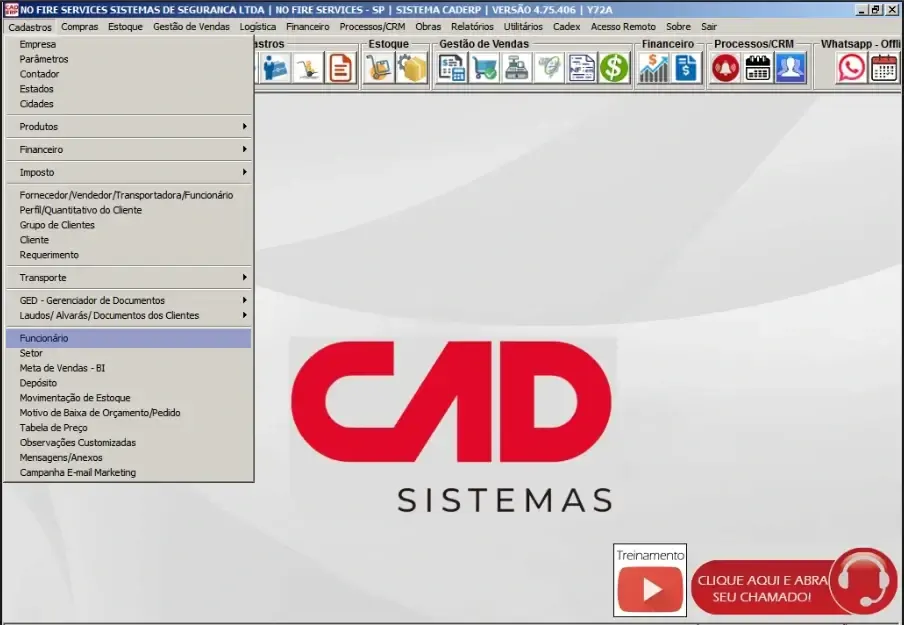
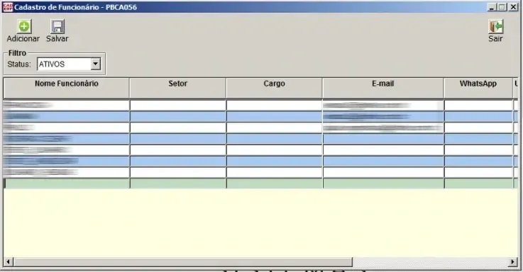
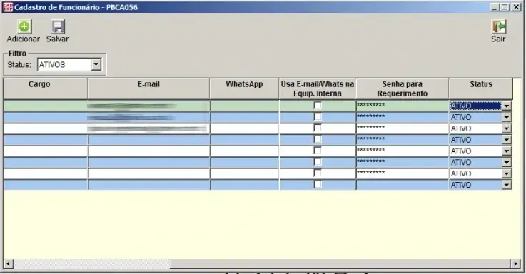
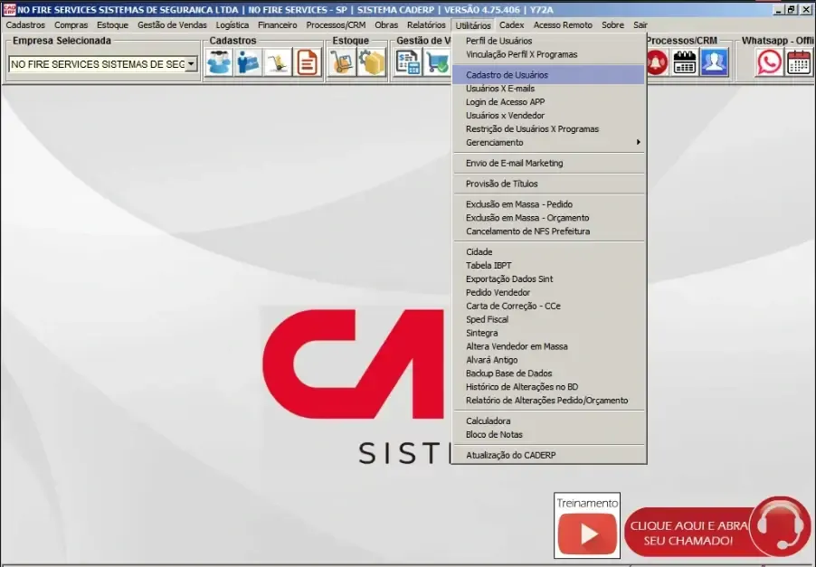
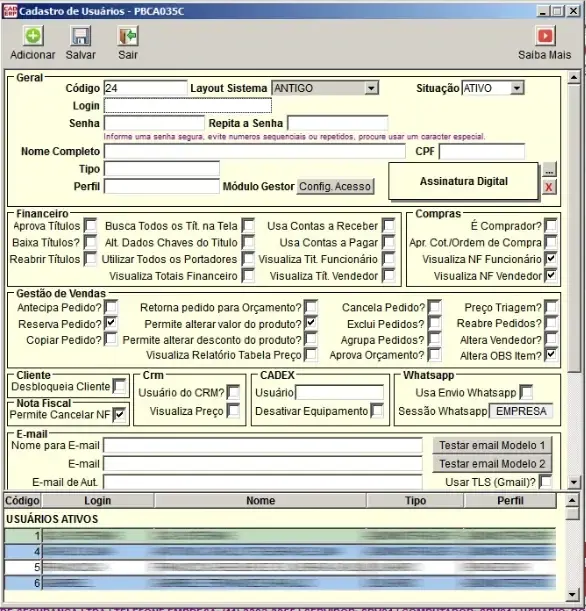

Objetivo da aula
Orientar o RH quanto ao cadastro, alteração e inativação de funcionários e usuários no CAD ERP, estabelecendo um procedimento claro para que a empresa consiga executar esta rotina internamente, sem necessidade de circular dados pessoais fora da área responsável.
Esta aula trata apenas da parte cadastral. A definição de perfis, permissões, liberações de menus e níveis de acesso será tratada separadamente, em etapa própria de governança do sistema.
O RH executa o cadastro. A definição de acesso não faz parte desta aula.
Por que esta rotina é importante
O cadastro de funcionários e usuários é uma etapa sensível porque envolve informações pessoais, identificação individual no sistema e controle sobre quem pode ou não acessar o CAD ERP.
Mesmo quando o cadastro parece simples, ele afeta diretamente a rastreabilidade da operação. Cada usuário deve representar uma pessoa real, com dados próprios e status corretamente atualizado.
- Permite identificar quem está cadastrado no sistema
- Evita uso de usuários genéricos ou reaproveitados
- Facilita inativação em caso de desligamento
- Preserva a rastreabilidade das ações realizadas no sistema
- Reduz circulação desnecessária de dados pessoais fora do RH
Usuário de sistema não deve ser tratado como simples cadastro. Ele representa uma pessoa e uma responsabilidade.
Escopo desta aula
Esta aula cobre duas etapas cadastrais distintas:
- Cadastro de Funcionário — PBCA056
- Cadastro de Usuário — PBCA035C
A primeira etapa registra a pessoa como funcionário/base interna. A segunda etapa cria ou mantém o usuário relacionado ao acesso ao sistema.
Cadastro de funcionário e cadastro de usuário são telas diferentes. Uma não substitui a outra.
Limite obrigatório da atividade
O RH poderá executar a parte cadastral, mas não deverá definir permissões, perfis ou níveis de acesso. Essa separação é necessária para evitar inconsistências e preservar a segurança operacional.
Nesta aula, o RH não deve alterar:
- Perfil do usuário
- Tipo de usuário
- Permissões financeiras
- Permissões comerciais
- Permissões fiscais
- Configurações de acesso
- Checkboxes de autorização que não façam parte do cadastro básico orientado
Em caso de dúvida sobre acesso, perfil, permissão ou liberação, o procedimento correto é parar e solicitar validação.
Fluxo geral do procedimento
O fluxo recomendado para criação, alteração ou inativação é:
- Verificar se o funcionário já existe no cadastro de funcionários
- Cadastrar ou atualizar o funcionário na tela PBCA056
- Acessar o cadastro de usuários na tela PBCA035C
- Cadastrar, alterar ou inativar o usuário, preenchendo apenas os campos autorizados
- Salvar as alterações
- Comunicar a implantação informando cadastrados, alterados e inativados
- Confirmar cargo e função para posterior definição de permissões
A comunicação após o cadastro é parte obrigatória do processo.
Parte 1 — Acesso ao Cadastro de Funcionários
O Cadastro de Funcionários é acessado pelo menu:
Cadastros > Funcionário
Menu de acesso ao Cadastro de Funcionários

Menu Cadastros com acesso à opção Funcionário.
Tela PBCA056 — Cadastro de Funcionários
Ao acessar a opção Funcionário, o sistema abre a tela PBCA056 — Cadastro de Funcionário. Esta tela apresenta uma grade com os funcionários cadastrados e permite adicionar novas linhas diretamente.
Cadastro de Funcionários — visão inicial

Tela PBCA056 com lista de funcionários ativos, botão Adicionar e botão Salvar.
Para incluir um funcionário, deve-se clicar no botão Adicionar. O sistema cria uma nova linha no final da tabela, e o preenchimento é feito diretamente nessa linha.
O cadastro só é gravado após clicar em Salvar.
Campos do Cadastro de Funcionários
A tela PBCA056 possui rolagem horizontal. Isso significa que nem todas as colunas aparecem ao mesmo tempo. O usuário deve utilizar a barra de rolagem inferior para visualizar os demais campos antes de concluir o cadastro.
Cadastro de Funcionários — colunas complementares

Visão complementar da tela PBCA056, exibindo colunas adicionais como e-mail, WhatsApp, senha para requerimento e status.
Campos identificados na tela:
- Nome Funcionário
- Setor
- Cargo
- WhatsApp - Não preencher
- Usa E-mail/Whats na Equip. Interna - Não preencher
- Senha para Requerimento - Não preencher
- Status — Ativo ou Inativo
Como cadastrar um funcionário
Para cadastrar um funcionário:
- Acessar Cadastros > Funcionário
- Clicar em Adicionar
- Preencher a nova linha criada no final da tabela
- Usar a barra de rolagem horizontal para verificar todos os campos
- Definir o Status correto
- Clicar em Salvar
Caso o funcionário já exista, não deve ser criado novo cadastro. O cadastro existente deve ser localizado e atualizado, quando necessário.
Não criar funcionário duplicado. Primeiro localizar, depois decidir se deve cadastrar ou alterar.
Inativação no Cadastro de Funcionários
Não foi localizada opção de exclusão de cadastro de funcionário. O procedimento correto para retirar um funcionário da base ativa é alterar o campo Status para Inativo.
- Localizar o funcionário na tela PBCA056
- Usar a rolagem horizontal até o campo Status
- Alterar de Ativo para Inativo
- Clicar em Salvar
Funcionário desligado ou sem necessidade de uso deve ser inativado, não reaproveitado para outra pessoa.
Parte 2 — Acesso ao Cadastro de Usuários
O Cadastro de Usuários é uma tela diferente do Cadastro de Funcionários. O acesso é feito pelo menu:
Utilitários > Cadastro de Usuários
Menu Utilitários — Cadastro de Usuários

Menu Utilitários com acesso à opção Cadastro de Usuários.
Tela PBCA035C — Cadastro de Usuários
Ao acessar a opção Cadastro de Usuários, o sistema abre a tela PBCA035C. Esta tela possui campos básicos de cadastro e também diversas opções sensíveis relacionadas a acesso e permissões.
Cadastro de Usuários — visão geral

Tela PBCA035C — Cadastro de Usuários, contendo campos cadastrais, status, perfil, tipo e blocos de permissões.
Atenção: nesta tela, o RH deve preencher apenas os campos cadastrais autorizados neste treinamento.
Campos autorizados para preenchimento pelo RH
Na tela PBCA035C, o RH deverá preencher ou alterar somente os seguintes campos:
- Nome Completo
- CPF
- Nome para E-mail
- Situação — apenas quando for necessário ativar ou inativar o usuário, conforme orientação recebida
O campo Código é automático e não deve ser alterado.
Código automático não deve ser digitado, apagado ou modificado.
Campos que não devem ser alterados pelo RH
A tela PBCA035C possui campos e checkboxes sensíveis que impactam diretamente o acesso, a operação e a segurança do sistema. Esses campos não fazem parte da atividade de cadastro executada pelo RH.
O RH não deve alterar:
- Tipo
- Perfil
- Layout Sistema
- Módulo Gestor
- Config. Acesso
- Assinatura Digital
- Checkboxes do bloco Financeiro
- Checkboxes do bloco Compras
- Checkboxes do bloco Gestão de Vendas
- Checkboxes do bloco Cliente
- Checkboxes do bloco CRM
- Checkboxes do bloco CADEX
- Checkboxes do bloco WhatsApp
- Checkboxes do bloco Nota Fiscal
- Configurações de SMTP, porta, senha de e-mail e assinatura, salvo orientação específica futura
Esses campos serão tratados em outro processo, relacionado a perfis, permissões e governança de acesso.
Como cadastrar um usuário na PBCA035C
Para iniciar o cadastro de um novo usuário:
- Acessar Utilitários > Cadastro de Usuários
- Clicar em Adicionar
- Não alterar o campo Código
- Preencher somente os campos autorizados
- Conferir os dados preenchidos
- Clicar em Salvar
- Comunicar a implantação para definição posterior de permissões
Caso alguma informação obrigatória não esteja disponível, o cadastro não deve ser improvisado. A informação deve ser confirmada antes da conclusão.
Não preencher dados pessoais por suposição.
Inativação de usuários na PBCA035C
A inativação de usuários também faz parte da rotina do RH. Quando um usuário não deve mais permanecer ativo, o procedimento correto é alterar o campo Situação para Inativo e salvar.
- Acessar Utilitários > Cadastro de Usuários
- Localizar o usuário correto na lista inferior
- Selecionar o usuário
- Alterar o campo Situação para Inativo
- Clicar em Salvar
- Informar a implantação que o usuário foi inativado
Usuário desligado não deve permanecer ativo no sistema.
Alteração de usuários existentes
Quando for necessário corrigir dados cadastrais de um usuário existente, o RH deve localizar o usuário correto e alterar apenas os campos permitidos:
- Nome Completo
- CPF
- Nome para E-mail
- Situação, quando houver necessidade de ativação ou inativação
Antes de salvar, conferir se o usuário selecionado é realmente a pessoa correta.
Alterar o usuário errado compromete a rastreabilidade e pode gerar falha operacional.
Comunicação obrigatória após cadastro, alteração ou inativação
Após executar qualquer manutenção em funcionários ou usuários, o RH deve comunicar a implantação. Essa comunicação é necessária porque a definição de permissões será feita posteriormente, com base no cargo, função e necessidade real de acesso.
A comunicação deve informar:
- Usuários cadastrados
- Usuários alterados
- Usuários inativados
- Cargo de cada usuário
- Função exercida na operação
- Observações relevantes, se houver
Sem confirmação de cargo e função, não deve haver definição de permissão.
Modelo simples de comunicação
O RH poderá utilizar uma mensagem simples, conforme modelo abaixo:
Foram realizados os seguintes ajustes no CADERP:
Cadastrados:
- Nome / Cargo / Função
Alterados:
- Nome / Campo alterado / Motivo
Inativados:
- Nome / Motivo
Pendências ou dúvidas:
- Informar se houver.
Essa comunicação pode ser feita por e-mail, mantendo os responsáveis copiados conforme orientação do projeto.
Regras obrigatórias de segurança operacional
- Não criar usuários genéricos
- Não reaproveitar usuário antigo para outra pessoa
- Não compartilhar login ou senha
- Não alterar perfil ou tipo de usuário
- Não marcar permissões sem orientação formal
- Não manter usuário ativo após desligamento
- Não cadastrar dados pessoais sem confirmação
- Não improvisar informações ausentes
Se a informação não estiver clara, o procedimento correto é parar e perguntar.
Erros comuns que devem ser evitados
- Cadastrar funcionário, mas esquecer de cadastrar usuário
- Cadastrar usuário, mas não comunicar a implantação
- Preencher CPF ou e-mail incorretamente
- Alterar o usuário errado
- Deixar usuário desligado como ativo
- Mexer em perfil, tipo ou permissões sem orientação
- Reaproveitar login de outra pessoa
- Não salvar após a alteração
Resultado esperado desta aula
Ao final desta aula, o RH deve ser capaz de:
- acessar o Cadastro de Funcionários pelo menu correto;
- cadastrar ou atualizar funcionários na PBCA056;
- inativar funcionários quando necessário;
- acessar o Cadastro de Usuários pelo menu correto;
- preencher apenas os campos autorizados na PBCA035C;
- inativar usuários corretamente;
- comunicar cadastrados, alterados e inativados;
- confirmar cargo e função para definição posterior de permissões;
- identificar quando deve parar e solicitar orientação.
Próximo passo
Após o cadastro de funcionários e usuários, a definição de perfis, permissões e acessos será tratada separadamente dentro da governança de implantação do CADERP.
Essa próxima etapa não deve ser executada como continuidade automática do cadastro, pois envolve análise de função, responsabilidade, risco e permissões por perfil.